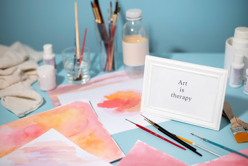

Exploring the therapeutic power of creativity
Mental health of patients has always been a crucial topic in the healing journey of a patient. There's presence of many patients that are unable to heal emotionally via traditional therapy. Some people might assume it is due to lack of experience or incompatibility between patients and psychiatrist. However, art, music or small creative activities plays a vital role in helping patients heal emotionally.
Art is in every pieces of our life puzzle and everyone perceives art in a different and unique manner. Undeniably, art has increased the quality of life of a patient who is struggling in their healing journey.
The purpose of this article is to explore how art, music, or small creative activities can help patient heal emotionally.

In a session, there will a presence of a trained art therapist who will guide patients through the process of finding inner peace, this allows the patient to move on their own path and create something which expresses themselves. This allows art to act as a tool for self-expression, stress relief and healing. Patients are able to explore their undercovered emotions, manage stress and anxiety, yet even build confidence. For some, the act of creating a work of art is soothing, while for others, they are able to convey their underlying messages via a new form of understanding.
Community Connection: Patients are able to work alone or work with people with common interests while creating art pieces. This allow them to communicate with different types of people and progressively shares their emotions via various form. For example, art, music or words. Other than that, a strong feeling of belonging will be fostered in the community.
Enhanced Creativity: Patients are also able to improve in creative thinking and problem solving skills. Patient will learn how to view things from different perspective and even get inspired from little details during their process of art therapy. This improves their flexibility in solving issues.
Just go ahead! Everyone perceives art in a different way and that's why art has no limitations or discriminations. Use art to tell everyone how you feel, use art to seek help, use art to become a better version of yourself.
By Tze Kee Chua (Kloe)
References: